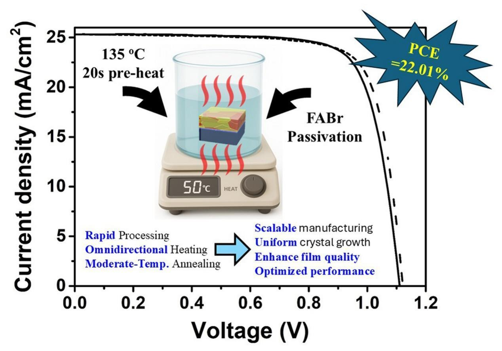

Scholarly article
Synergistic preheating and moderate temperature liquid medium annealing for high performance perovskite solar cells
Solar Energy, 309, 114430 (2026).
Research topic: Perovskite Solar Cells
Abstract
The performance and stability of perovskite solar cells (PSCs) can be limited by film quality and interfacial defects. In this study, we developed a moderate-temperature liquid medium annealing (LMA) process that involves a 20-s preheating step, followed by formamidinium bromide (FABr) passivation. The preheating step effectively removes residual antisolvent and initiates uniform nucleation, enabling the formation of continuous and uniform perovskite films with large grains and high crystallinity. The optimal time and temperature for LMA were determined to be 3 min and 50 °C, respectively. Devices fabricated through LMA involving the preheating step exhibited a champion power conversion efficiency (PCE) of 21.49% and suppressed hysteresis. Incorporation of FABr passivation into this process improved the PCE to 22.01%, reduced the trap density between perovskite and the hole transport material, and extended carrier lifetime. Notably, an unencapsulated PSC with perovskite films produced through LMA, preheating, and FABr passivation retained 94.5% of its initial PCE after 650 h under ISOS-D1 testing. Overall, the proposed synergistic strategy offers a scalable route for fabricating efficient and durable PSCs.
Highlights
- Preheated moderate-temp LMA produces uniform films with enhanced crystallinity.
- Preheating removes residual solvent and improves charge carrier extraction.
- LMA PSCs reach 21.49% PCE, further boosted to 22.01% with FABr passivation.
- FABr-passivated LMA cells retain 94.5% efficiency after 650 h under ISOS-D1 tests.
Graphical Abstract
